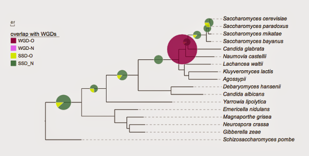
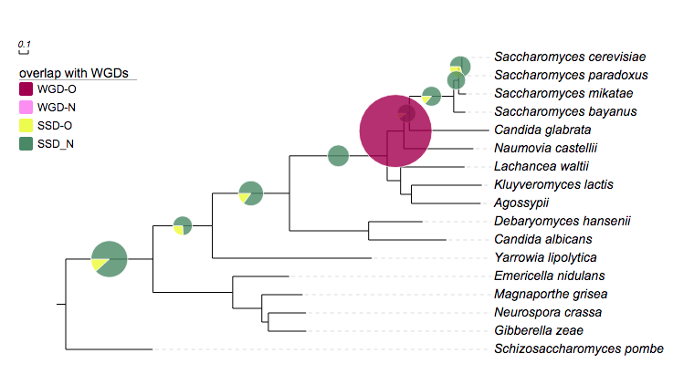
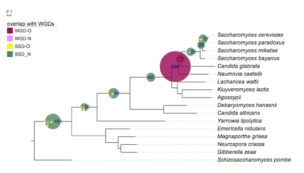

Pie chart
Tip
notes on preparing your dataset!!
- please always use TAB to separate the modifiers and their values.
- some modifiers should not be used in combination, e.g. !area and !radius are mutually exclusive.
- However if both are used (accidentally), only the last one will be used.
- if a modifier is used (accidentally) multiple tiles, only the last one will be used.
- the "data" part of this dataset can only contain two columns of tab-delimited texts; the third column, if presents, will be ignored
Related modifiers
(not all datasets support these modifiers)
| Key (case insensitive) | Value | Description |
|---|---|---|
| !minradius | any float number > 0 | minimal pixel radius of the pies |
| !maxradius | any float number > 0 | maximal pixel radius of the pies |
| !area | none | use user inputs as the areas of the pie charts |
| !radius | none | use user inputs as the radiuses of the pie charts |
Tree
((((((((((Saccharomyces_cerevisiae:0.054377,Saccharomyces_paradoxus:0.039196)Saccharomyces_subclade:0.035915,Saccharomyces_mikatae:0.082075)Saccharomyces_subclade:0.054132,Saccharomyces_bayanus:0.128022)Saccharomyces:0.485857,Candida_glabrata:0.874698)Saccharomycetaceae_subclade:0.060179,Naumovia_castellii:0.761269)Saccharomycetaceae_subclade:0.182516,(Lachancea_waltii:0.700985,(Kluyveromyces_lactis:0.770604,Agossypii:0.758273)Kluyveromyces:0.118441)Saccharomycetaceae_subclade:0.146942)Saccharomycetaceae:1.069627,(Debaryomyces_hansenii:0.591048,Candida_albicans:0.851762)Saccharomycetales_subclade:0.866539)Saccharomycetales_subclade:0.844816,Yarrowia_lipolytica:1.745091)Saccharomycetales:0.650477,(Emericella_nidulans:0.618015,(Magnaporthe_grisea:0.446021,(Neurospora_crassa:0.412753,Gibberella_zeae:0.414866)Sordariomycetes_subclade:0.071418)Sordariomycetes:0.318914)Pezizomycotina:0.873484)Ascomycota_subclade:0.955079,Schizosaccharomyces_pombe:0.952249);
Example
Example 1

## for evolview; Yeast
!Groups WGD,SSD
!colors #9F0251,#4D8963
!legendstyle circle
!title Duplication mechanism
!opacity 0.8
Saccharomyces_cerevisiae,Saccharomyces_paradoxus 0,19
Saccharomyces_cerevisiae,Saccharomyces_mikatae 0,20
Saccharomyces_cerevisiae,Saccharomyces_bayanus 0,18
Saccharomyces_cerevisiae,Candida_glabrata 0,22
Saccharomyces_cerevisiae,Naumovia_castellii 862,0
Saccharomyces_cerevisiae,Lachancea_waltii 0,29
Saccharomyces_cerevisiae,Candida_albicans 0,53
Saccharomyces_cerevisiae,Yarrowia_lipolytica 0,26
Saccharomyces_cerevisiae,Neurospora_crassa 0,169
Tip
- an internal branch / node is identified by the names of two leaf nodes; the former is the last common ancestor of the latter
- the values of an internal branches are separated by ",", e.g. 0,19
- the number of values of all internal nodes should be the same (two in this dataset)
- the same number of colors should be provided by "!colors" ("#9F0251,#4D8963" in this case)
- and the same number of "groups" should also provided by "!groups"
Example
Example 2

# for evolview; Yeast
## created at may 25, 2011
!Groups WGD-O,WGD-N,SSD-O,SSD-N
!colors #9F0251,#f88ef9,#effc00,#4D8963
!legendstyle circle
!title overlap with other duplicates
!opacity 0.8
Saccharomyces_cerevisiae,Saccharomyces_paradoxus 0,0,24,14
Saccharomyces_cerevisiae,Saccharomyces_mikatae 0,0,14,11
Saccharomyces_cerevisiae,Saccharomyces_bayanus 0,0,13,16
Saccharomyces_cerevisiae,Candida_glabrata 0,0,4,18
Saccharomyces_cerevisiae,Naumovia_castellii 77,792,0,0
Saccharomyces_cerevisiae,Lachancea_waltii 0,0,12,28
Saccharomyces_cerevisiae,Candida_albicans 0,0,18,42
Saccharomyces_cerevisiae,Yarrowia_lipolytica 0,0,11,16
Saccharomyces_cerevisiae,Neurospora_crassa 0,0,28,143
Show data values
| modifiers | alternative value | description |
|---|---|---|
| show = 1 | 0 | show or hide data values; optional; the data values will be shown if omitted |
| fontsize=12 | any integer | set font size; optional; default = 10 |
| fontcolor=red | any valid HTML color name such as 'darkred' and hex color code such as '#FF0000' | set text color; optional; default = black |
| fontitalic=1 | 0 | set font italic; optional; default = 0 |
Example
Example 3

## for evolview; Yeast
## created at may 25, 2011
!Groups WGD-O,WGD-N,SSD-O,SSD_N
!colors #9F0251,#f88ef9,#effc00,#4D8963
!legendstyle rect
!title overlap with WGDs
!opacity 0.8
!showlegends 0
!showDataValue show=1,fontsize=12,fontcolor=darkblue,titalic=1
Saccharomyces_cerevisiae,Saccharomyces_paradoxus 0,0,11,27
Saccharomyces_cerevisiae,Saccharomyces_mikatae 0,0,0,25
Saccharomyces_cerevisiae,Saccharomyces_bayanus 0,0,4,25
Saccharomyces_cerevisiae,Candida_glabrata 0,0,2,20
Saccharomyces_cerevisiae,Naumovia_castellii 869,0,0,0
Saccharomyces_cerevisiae,Lachancea_waltii 0,0,0,40
Saccharomyces_cerevisiae,Candida_albicans 0,0,9,51
Saccharomyces_cerevisiae,Yarrowia_lipolytica 0,0,7,20
Saccharomyces_cerevisiae,Neurospora_crassa 0,0,20,151